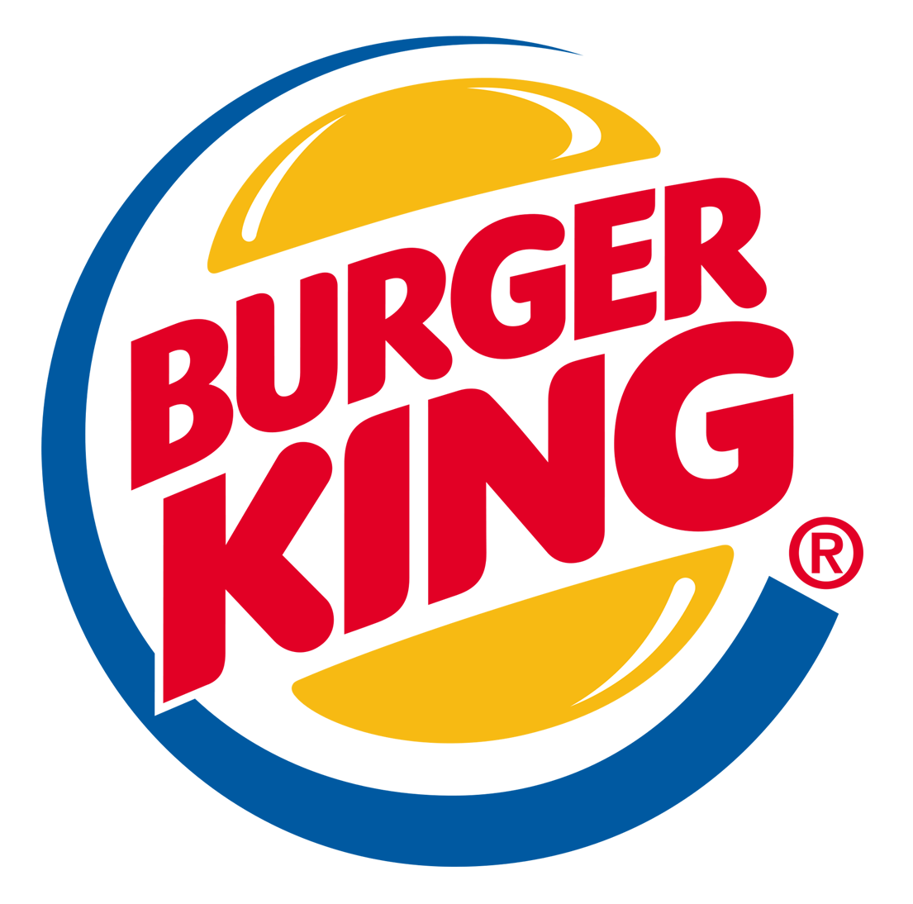

With $8.7 billion in revenue from franchise stores alone, McDonald's has more money than the entire country of Mongolia
According to the well-known book, Fast Food Nation, a survey discovered that 88 percent of respondents worldwide could identify the golden arches of McDonald's, while a only 54 percent recognized the Christian cross
Every single day, almost one percent of the global population eats at McDonald's. That translates to 69 million people with 75 burgers being sold every second on average.
Chick-fil-A
The restaurant's lemonade is so popular that the chain squeezed more than 200 million lemons in 2013 alone. You know the saying: When life gives you more than 200 million lemons, make a lot of lemonade to wash down fried-chicken sandwiches.
Their faith-based leadership is the reason every Chick-fil-A is closed on Sunday—even the one located in a Football Stadium.
Have you ever spotted customers camping out in front of a store, not for iPhones or Black Friday deals, but for a chicken sandwich? It's a regular, all-night party when a new Chick-fil-A is set to open, with the first 100 customers winning a meal once a week for a year.

Burger King
If you didn't already think celebrities like Jay Leno and Jennifer Hudson were living the good life, know that they are also the lucky owners of the Burger King Crown Card. This prestigious card entitles the holder to an endless supply of burgers and fries at any Burger King.
Have you ever wanted to smell like a mouthwatering burger, carrying "the scent of seduction with a hint of flame-broiled meat?" Back in 2015, you could purchase the limited-edition cologne for $55 in Japan.
When Burger King decided to open up chains in Australia they were initially delayed when it turned out there was already a Burger King in the country, and they had trademarked the name. In the end, they opened with the familiar menu items, and a new name, Hungry Jack, which is still the name they go by down under today.